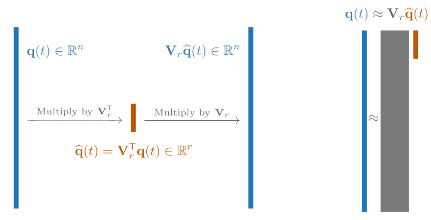

What is Operator Inference?#

The goal of Operator Inference is to construct a low-dimensional, computationally inexpensive system whose solutions are close to those of some high-dimensional system for which we have 1) training data and 2) some knowledge about the system structure. The main steps are the following.
Get Training Data. Gather and preprocess high-dimensional data to learn a low-dimensional model from. This package has a few common preprocessing tools, but the user must bring the data to the table.
Compute a Low-dimensional Representation. Represent the high-dimensional data with only a few degrees of freedom. The simplest approach is to take the SVD of the high-dimensional training data, extract the first few left singular vectors, and use these vectors as a new coordinate basis.
Set up and Solve a Low-dimensional Regression. Use the low-dimensional representation of the training data to determine a reduced-order model that best fits the data in a minimum-residual sense. This is the core objective of the package.
Evaluate the Reduced-order Model. Use the learned model to make computationally efficient predictions.
This page gives an overview of Operator Inference by walking through each of these steps.
Problem Statement#
Consider a system of ordinary differential equations (ODEs) with state \(\q(t)\in\RR^{n}\) and inputs \(\u(t)\in\RR^{m}\),
We call (1) the full-order model. Given samples of the state \(\q(t)\), Operator Inference learns a surrogate system for (1) with the much smaller state \(\qhat(t) \in \RR^{r}, r \ll n,\) and a polynomial structure, for example:
We call (2) a reduced-order model for (1). Our goal is to infer the reduced-order operators \(\chat \in \RR^{r}\), \(\Ahat\in\RR^{r\times r}\), \(\Hhat\in\RR^{r\times r^{2}}\), and/or \(\Bhat\in\RR^{r\times m}\) using data from (1). The user specifies which terms to include in the model.
Important
The right-hand side of (2) is a polynomial with respect to the state \(\qhat(t)\): \(\chat\) are the constant terms, \(\Ahat\qhat(t)\) are the linear terms, \(\Hhat[\qhat(t)\otimes\qhat(t)]\) are the quadratic terms, with input terms \(\Bhat\u(t)\). The user must choose which terms to include in the reduced-order model, and this choice should be motivated by the structure of the full-order model (1). For example, if the full-order model can be written as
then the reduced-order model should mirror this structure as
Motivation
Projection preserves polynomial structure [BGW15, PW16]. The classical (Galerkin) projection-based reduced-order model for the system
is obtained by substituting \(\q(t)\) with \(\mathbf{V}\qhat(t)\) for some orthonormal \(\mathbf{V}\in\RR^{n \times r}\) and \(\qhat(t)\in \RR^{r}\), then multiplying both sides by \(\mathbf{V}\trp\):
Since \(\mathbf{V}\trp\mathbf{V}\) is the identity and \((\mathbf{X}\mathbf{Y})\otimes(\mathbf{Z}\mathbf{W}) = (\mathbf{X}\otimes \mathbf{Z})(\mathbf{Y}\otimes\mathbf{W})\), this simplifies to
where \(\chat = \mathbf{V}\trp\c\), \(\Ahat = \mathbf{V}\trp\A\mathbf{V}\), \(\Hhat = \mathbf{V}\trp\H\left(\mathbf{V}\otimes\mathbf{V}\trp\right)\), and \(\Bhat = \mathbf{V}\trp\B\). Operator Inference learns \(\chat\), \(\Ahat\), \(\Hhat\), and/or \(\Bhat\) from data and is therefore useful for situations where \(\c\), \(\A\), \(\H\), and/or \(\B\) are not explicitly available for matrix computations.
Get Training Data#
Operator Inference learns reduced-order models from full-order state/input data. Start by gathering solution and input data and organizing them columnwise into the state snapshot matrix \(\Q\) and input matrix \(\U\),
where \(n\) is the dimension of the (discretized) state, \(m\) is the dimension of the input, \(k\) is the number of available data points, and the columns of \(\Q\) and \(\U\) are the solution to the full-order model at some time \(t_j\):
Important
Raw dynamical systems data often needs to be lightly preprocessed before it can be used in Operator Inference. Preprocessing can promote stability in the inference of the reduced-order operators and improve the stability and accuracy of the resulting reduced-order model (2). Common preprocessing steps include
Variable transformations / lifting to induce a polynomial structure.
Centering or shifting data to account for boundary conditions.
Scaling / nondimensionalizing the variables represented in the state.
See Data Preprocessing for details and examples.
Operator Inference uses a regression problem to compute the reduced-order operators, which requires state data (\(\Q\)), input data (\(\U\)), and data for the corresponding time derivatives:
Note
If these time derivatives cannot be computed directly by evaluating \(\mathbf{F}(t_{j}, \q_{j}, \u_{j})\), they may be inferred from the state snapshots.
The simplest approach is to use finite differences of the state snapshots, implemented in this package as opinf.pre.ddt().
Warning
If you do any preprocessing on the states, be sure to use the time derivatives of the processed states, not of the original states.
Compute a Low-dimensional Representation#
The purpose of learning a reduced-order model is to achieve a computational speedup. This is accomplished by introducing an approximate representation of the \(n\)-dimensional state using only \(r \ll n\) degrees of freedom. The most common approach is to represent the state as a linear combination of \(r\) vectors:
where
We call \(\Vr \in \RR^{n \times r}\) the basis matrix and typically require that it have orthonormal columns. The basis matrix is the link between the high-dimensional state space of the full-order model (1) and the low-dimensional state space of the reduced-order model (2).
{kind=link}

See Dimensionality Reduction for tools to compute the basis \(\Vr\in\RR^{n \times r}\) and select an appropriate dimension \(r\).
Set up and Solve a Low-dimensional Regression#
Operator Inference determines the operators \(\chat\), \(\Ahat\), \(\Hhat\), and/or \(\Bhat\) by solving the following data-driven regression:
where
\(\qhat_{j} = \Vr\trp\q(t_{j})\) is the state at time \(t_{j}\) represented in the coordinates of the basis,
\(\dot{\qhat}_{j} = \ddt\Vr\trp\q\big|_{t=t_{j}}\) is the time derivative of the state at time \(t_{j}\) in the coordinates of the basis,
\(\u_{j} = \u(t_j)\) is the input at time \(t_{j}\), and
\(\mathcal{R}\) is a regularization term that penalizes the entries of the learned operators.
The least-squares minimization (4) can be written in the more standard form
where
in which \(d(r,m) = 1 + r + r(r+1)/2 + m\) and \(\mathbf{1}_{k}\in\RR^{k}\) is a vector of ones.
Derivation
The Frobenius norm of a matrix is the square root of the sum of the squared entries. If \(\mathbf{Z}\) has entries \(z_{ij}\), then
Writing \(\mathbf{Z}\) in terms of its columns,
we have
Furthermore, \(\|\mathbf{Z}\|_{F} = \|\mathbf{Z}\trp\|_{F}\). Using these two properties, we can rewrite the least-squares residual as follows:
which is the standard form given above.
Important
Writing the problem in standard form reveals an important fact: for the most common choices of \(\mathcal{R}\), the Operator Inference learning problem (4) has a unique solution if and only if \(\D\) has full column rank. A necessary condition for this to happen is \(k \ge d(r,m)\), that is, the number of training snapshots \(k\) should exceed the number of reduced-order operator entries to be learned for each system mode. If you are experiencing poor performance with Operator Inference reduced models, try decreasing \(r\), increasing \(k\), or adding a regularization term to improve the conditioning of the learning problem.
Note
Let \(\ohat_{1},\ldots,\ohat_{r}\in\RR^{d(r,m)}\) be the rows of \(\Ohat\). If the regularization can be written as
then the Operator Inference regression decouples along the rows of \(\Ohat\) into \(r\) independent least-squares problems:
where \(\mathbf{y}_{i},\ldots,\mathbf{y}_{r}\) are the rows of \(\mathbf{Y}\).
Solve the Reduced-order Model#
Once the reduced-order operators have been determined, the corresponding reduced-order model (2) can be solved rapidly to make predictions. The computational cost of solving the reduced-order model scales with \(r\), the number of degrees of freedom in the low-dimensional representation of the state.
For example, we may use the reduced-order model to obtain approximate solutions of the full-order model (1) with
new initial conditions \(\q_{0}\),
a different input function \(\u(t)\),
a longer time horizon than the training data,
different system parameters.
Important
The accuracy of any data-driven model depends on how well the training data represents the full-order system. We should not expect a reduced-order model to perform well under conditions that are wildly different than the training data. The Getting Started tutorial demonstrates this concept in the case of prediction for new initial conditions.
Brief Example#
Suppose we have the following variables.
Variable |
Symbol |
Description |
|---|---|---|
|
\(\Q\in\RR^{n\times k}\) |
State snapshot matrix |
|
\(\U\in\RR^{m}\) |
Input matrix |
|
\(t\) |
Time domain for snapshot data |
That is, Q[:, j] and U[:, j] are the state and input, respectively, corresponding to time t[j].
Then the following code learns a reduced-order model of the form
from the training data, uses the reduced-order model to reconstruct the training data, and computes the error of the reconstruction.
import opinf
# Compute a rank-10 basis (POD) from the state data.
>>> basis = opinf.pre.PODBasis(Q, r=10)
# Compress the state data to a low-dimensional subspace.
>>> Q_compressed = basis.compress(Q)
# Estimate time derivatives of the compressed states with finite differences.
>>> Qdot_compressed = opinf.ddt.ddt(Q_compressed, t)
# Define an ODE model with the structure indicated above.
>>> rom = opinf.models.ContinuousModel("AHB")
# Select a least-squares solver with a small amount of regularization.
>>> solver = opinf.lstsq.L2Solver(regularizer=1e-6)
# Fit the model, i.e., construct and solve a linear regression.
>>> rom.fit(states=Q_compressed, ddts=Qdot_compressed, inputs=U, solver=solver)
# Simulate the learned model over the time domain.
>>> Q_rom_compressed = rom.predict(Q_compressed[:, 0], t)
# Map the reduced-order solutions back to the full state space.
>>> Q_rom = basis.decompress(Q_rom_compressed)
# Compute the error of the ROM prediction.
>>> absolute_error, relative_error = opinf.post.Lp_error(Q, Q_rom)
See Getting Started for an introductory tutorial.